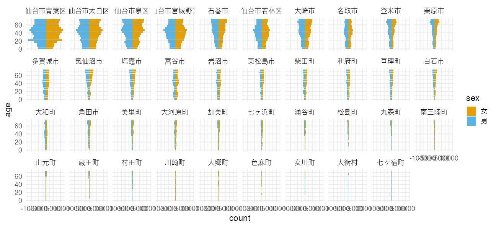

Rによるデータ前処理実習2024
東北大学 生命科学研究科 進化ゲノミクス分野 特任助教
(Graduate School of Life Sciences, Tohoku University)
(Graduate School of Life Sciences, Tohoku University)
- 入門1: 前処理とは。Rを使うメリット。Rの基本。
- 入門2: データ可視化の重要性と方法。
- データ構造の処理1: 抽出、集約など。
- データ構造の処理2: 結合、変形など。
- データ内容の処理: 数値、文字列、日時など。
- 実践: 現実の問題に対処してみる。
2024-09-21 東京医科歯科大学 M&Dタワー
https://heavywatal.github.io/slides/tmd2024/
https://heavywatal.github.io/slides/tmd2024/
データ解析のおおまかな流れ
- コンピュータ環境の整備 ✅
- データの取得、読み込み ⬜ 👈 今回はここから
- 探索的データ解析
- 前処理、加工 ✅ 完全に理解した
- 可視化、仮説生成 ✅ 完全に理解した
- 統計解析、仮説検証
- 報告、発表

data.frameの読み書き

-
readxlパッケージを使えば
.xlsxファイルも読める、けど -
カンマ区切り(CSV)とかタブ区切り(TSV)のテキストが無難。
-
R標準の関数ではなく readr パッケージを使う。
-
ファイル名は作業ディレクトリからの相対パスで指定。
readr::write_tsv(iris, "data/iris.tsv") # 書き出し iris2 = readr::read_tsv("data/iris.tsv") # 読み込み
あれれー、エラーが出る？
Error: Cannot open file for writing:
* 'data/iris.tsv'
ファイル読み書きでありがちなエラー
- 読みたいファイル名が間違っている。
- 読みたいファイルが作業ディレクトリとは違うところにある。
- 書き込み先のディレクトリが存在しない。→ 予め作っておこう
冷静に、現在の作業ディレクトリとその中身を確認しよう:
getwd() # GET Working Directory
fs::dir_ls(".") # List files in "." (here)
fs::dir_ls("data") # List files in "./data"
fs::dir_create("data") # Create directory
よくあるエラー集 (石川由希さん@名古屋大) を読んでおきましょう。
🔰 これまでに登場したデータを data/ 以下に書き出してみよう。
🔰 それらを別の名前で読み込み直してみよう。
Excelの親切あるいは裏切りに要注意
表形式のファイルを閲覧・作成するソフトとしてよく普及。
しかし親切設計がユーザーに牙を剥く！
- 文字列が勝手に日付になる:
22-4,4-14 - 遺伝子名が勝手に日付になる:
MARCH1,SEPT1
(2020年、これを避けるために改名された)
🔰 CSVファイルを読み書きして恐怖を体感しよう:
gene,label
MARCH1,22-4
SEPT1,4-14
- ↑からのコピペで
excel.csvという名のプレーンテキストを作成。 - Excelでそれで開き、日付になることを確認。
- それを別名のCSVとして保存し、テキストの中身を確認。
🔰 3日目の課題: オープンデータを拾って可視化しよう。
- 自分がこれから解析したいデータ (もし手元にあれば)
- 何か適当なパブリックデータ。例えば:
- e-Stat: 政府統計の総合窓口
- data.go.jp データカタログサイト: 中央省庁
- BODIKオープンデータカタログサイト: 地方自治体
- 気象庁
- DATA.GOV: U.S. Government’s open data
- (苦肉の策) Rやパッケージに付属のデータ
diamonds,starwars,mpg, etc. Seedata()
読み込み → 前処理 → 可視化 → 余裕でクリア、、、となるか？
実演: e-Stat 国勢調査 CSV
2020年 → 小地域 → 年齢（５歳階級、４区分）別、男女別人口 → 宮城県
うまくすれば次のような人口ピラミッドを描けるはずのファイルだが…
オープンデータを入手できても簡単には読み込めない
初手エラー:
infile = "tblT001082C04.txt"
readr::read_csv(infile)
Error in nchar(x, keepNA = FALSE): invalid multibyte string, element 2
RStudioでテキストとして開いてみると文字化け:
KEY_CODE,HYOSYO,CITYNAME,NAME,HTKSYORI,HTKSAKI,GASSAN,T001082001,T001082002,T001082003,T001082004,T001082005,T001082006,T001082007,T001082008,T001082009,T001082010,T001082011,T001082012,T001082013,T001082014,T001082015,T001082016,T001082017,T001082018,T001082019,T001082020,T001082021,T001082022,T001082023,T001082024,T001082025,T001082026,T001082027,T001082028,T001082029,T001082030,T001082031,T001082032,T001082033,T001082034,T001082035,T001082036,T001082037,T001082038,T001082039,T001082040,T001082041,T001082042,T001082043,T001082044,T001082045,T001082046,T001082047,T001082048,T001082049,T001082050,T001082051,T001082052,T001082053,T001082054,T001082055,T001082056,T001082057,T001082058,T001082059,T001082060
,,,,,,,\x91\x8d\x90\x94\x81A\x94N\x97\xee\x81u\x95s\x8fځv\x8a܂\xde,\x91\x8d\x90\x94\x82O\x81`\x82S\x8d\xce,\x91\x8d\x90\x94\x82T\x81`\x82X\x8d\xce,\x91\x8d\x90\x94\x82P\x82O\x81`\x82P\x82S\x8d\xce,\x91\x8d\x90\x94\x82P\x82T\x81`\x82P\x82X\x8d\xce,\x91\x8d\x90\x94\x82Q\x82O\x81`\x82Q\x82S\x8d\xce,\x91\x8d\x90\x94\x82Q\x82T\x81`\x82Q\x82X\x8d\xce,\x91\x8d\x90\x94\x82R\x82O\x81`\x82R\x82S\x8d\xce,\x91\x8d\x90\x94\x82R\x82T\x81`\x82R\x82X\x8d\xce,\x91\x8d\x90\x94\x82S\x82O\x81`\x82S\x82S\x8d\xce,\x91\x8d\x90\x94\x82S\x82T\x81`\x82S\x82X\x8d\xce,\x91\x8d\x90\x94\x82T\x82O\x81`\x82T\x82S\x8d\xce,\x91\x8d\x90\x94\x82T\x82T\x81`\x82T\x82X\x8d\xce,\x91\x8d\x90\x94\x82U\x82O\x81`\x82U\x82S\x8d\xce,\x91\x8d\x90\x94\x82U\x82T\x81`\x82U\x82X\x8d\xce,\x91\x8d\x90\x94\x82V\x82O\x81`\x82V\x82S\x8d\xce,\x91\x8d\x90\x94\x82P\x82T\x8dΖ\xa2\x96\x9e,\x91\x8d\x90\x94\x82P\x82T\x81`\x82U\x82S\x8d\xce,\x91\x8d\x90\x94\x82U\x82T\x8dΈȏ\xe3,\x91\x8d\x90\x94\x82V\x82T\x8dΈȏ\xe3,\x92j\x82̑\x8d\x90\x94\x81A\x94N\x97\xee\x81u\x95s\x8fځv\x8a܂\xde,\x92j\x82O\x81`\x82S\x8d\xce,\x92j\x82T\x81`\x82X\x8d\xce,\x92j\x82P\x82O\x81`\x82P\x82S\x8d\xce,\x92j\x82P\x82T\x81`\x82P\x82X\x8d\xce,\x92j\x82Q\x82O\x81`\x82Q\x82S\x8d\xce,\x92j\x82Q\x82T\x81`\x82Q\x82X\x8d\xce,\x92j\x82R\x82O\x81`\x82R\x82S\x8d\xce,\x92j\x82R\x82T\x81`\x82R\x82X\x8d\xce,\x92j\x82S\x82O\x81`\x82S\x82S\x8d\xce,\x92j\x82S\x82T\x81`\x82S\x82X\x8d\xce,\x92j\x82T\x82O\x81`\x82T\x82S\x8d\xce,\x92j\x82T\x82T\x81`\x82T\x82X\x8d\xce,\x92j\x82U\x82O\x81`\x82U\x82S\x8d\xce,\x92j\x82U\x82T\x81`\x82U\x82X\x8d\xce,\x92j\x82V\x82O\x81`\x82V\x82S\x8d\xce,\x92j\x82P\x82T\x8dΖ\xa2\x96\x9e,\x92j\x82P\x82T\x81`\x82U\x82S\x8d\xce,\x92j\x82U\x82T\x8dΈȏ\xe3,\x92j\x82V\x82T\x8dΈȏ\xe3,\x8f\x97\x82̑\x8d\x90\x94\x81A\x94N\x97\xee\x81u\x95s\x8fځv\x8a܂\xde,\x8f\x97\x82O\x81`\x82S\x8d\xce,\x8f\x97\x82T\x81`\x82X\x8d\xce,\x8f\x97\x82P\x82O\x81`\x82P\x82S\x8d\xce,\x8f\x97\x82P\x82T\x81`\x82P\x82X\x8d\xce,\x8f\x97\x82Q\x82O\x81`\x82Q\x82S\x8d\xce,\x8f\x97\x82Q\x82T\x81`\x82Q\x82X\x8d\xce,\x8f\x97\x82R\x82O\x81`\x82R\x82S\x8d\xce,\x8f\x97\x82R\x82T\x81`\x82R\x82X\x8d\xce,\x8f\x97\x82S\x82O\x81`\x82S\x82S\x8d\xce,\x8f\x97\x82S\x82T\x81`\x82S\x82X\x8d\xce,\x8f\x97\x82T\x82O\x81`\x82T\x82S\x8d\xce,\x8f\x97\x82T\x82T\x81`\x82T\x82X\x8d\xce,\x8f\x97\x82U\x82O\x81`\x82U\x82S\x8d\xce,\x8f\x97\x82U\x82T\x81`\x82U\x82X\x8d\xce,\x8f\x97\x82V\x82O\x81`\x82V\x82S\x8d\xce,\x8f\x97\x82P\x82T\x8dΖ\xa2\x96\x9e,\x8f\x97\x82P\x82T\x81`\x82U\x82S\x8d\xce,\x8f\x97\x82U\x82T\x8dΈȏ\xe3,\x8f\x97\x82V\x82T\x8dΈȏ\xe3
04101,1,\x90\xe5\x91\xe4\x8es\x90\u0097t\x8b\xe6,,0,,,311590,10231,11633,11838,15944,23772,17838,17677,19028,21113,23299,20544,18295,16702,17137,17700,33702,194212,69969,35132,150932,5350,6087,6066,8321,12579,8669,8600,9241,10232,11412,10317,9031,7893,8010,8082,17503,96295,29477,13385,160658,4881,5546,5772,7623,11193,9169,9077,9787,10881,11887,10227,9264,8809,9127,9618,16199,97917,40492,21747
041010010,2,\x90\xe5\x91\xe4\x8es\x90\u0097t\x8b\xe6,\x90\u0097t\x92\xac,0,,,649,16,15,17,23,53,62,49,40,40,40,45,33,28,38,38,48,413,143,67,307,8,10,7,10,26,30,27,21,18,14,25,16,11,15,16,25,198,60,29,342,8,5,10,13,27,32,22,19,22,26,20,17,17,23,22,23,215,83,38
041010020,2,\x90\xe5\x91\xe4\x8es\x90\u0097t\x8b\xe6,\x82\xa0\x82\xaf\x82ڂ̒\xac,0,,,741,23,18,13,26,32,55,48,42,60,51,48,47,38,55,43,54,447,209,111,365,12,10,4,15,16,22,28,19,39,27,25,16,23,24,21,26,230,89,44,376,11,8,9,11,16,33,20,23,21,24,23,31,15,31,22,28,217,120,67
メニューから “File → Reopen with Encoding…” を選択。
たいてい、古い日本語ファイルにありがちなSHIFT-JISが正解。
(もっと古いファイルならEUC-JPとかの場合もある。)
文字コードを指定して読み込み
よく見ると、8列目以降の列名が2行にまたがっている:
sjis = readr::locale(encoding = "SHIFT-JIS")
readr::read_csv(infile, locale = sjis)
KEY_CODE HYOSYO CITYNAME NAME HTKSYORI HTKSAKI GASSAN T001082001 T001082002 T001082003 T001082004 T001082005 T001082006 T001082007 T001082008 T001082009 T001082010 T001082011 T001082012 T001082013 T001082014 T001082015 T001082016 T001082017 T001082018 T001082019 T001082020 T001082021 T001082022 T001082023 T001082024 T001082025 T001082026 T001082027 T001082028 T001082029 T001082030 T001082031 T001082032 T001082033 T001082034 T001082035 T001082036 T001082037 T001082038 T001082039 T001082040 T001082041 T001082042 T001082043 T001082044 T001082045 T001082046 T001082047 T001082048 T001082049 T001082050 T001082051 T001082052 T001082053 T001082054 T001082055 T001082056 T001082057 T001082058 T001082059 T001082060
1 <NA> NA <NA> <NA> NA <NA> <NA> 総数、年齢「不詳」含む 総数０〜４歳 総数５〜９歳 総数１０〜１４歳 総数１５〜１９歳 総数２０〜２４歳 総数２５〜２９歳 総数３０〜３４歳 総数３５〜３９歳 総数４０〜４４歳 総数４５〜４９歳 総数５０〜５４歳 総数５５〜５９歳 総数６０〜６４歳 総数６５〜６９歳 総数７０〜７４歳 総数１５歳未満 総数１５〜６４歳 総数６５歳以上 総数７５歳以上 男の総数、年齢「不詳」含む 男０〜４歳 男５〜９歳 男１０〜１４歳 男１５〜１９歳 男２０〜２４歳 男２５〜２９歳 男３０〜３４歳 男３５〜３９歳 男４０〜４４歳 男４５〜４９歳 男５０〜５４歳 男５５〜５９歳 男６０〜６４歳 男６５〜６９歳 男７０〜７４歳 男１５歳未満 男１５〜６４歳 男６５歳以上 男７５歳以上 女の総数、年齢「不詳」含む 女０〜４歳 女５〜９歳 女１０〜１４歳 女１５〜１９歳 女２０〜２４歳 女２５〜２９歳 女３０〜３４歳 女３５〜３９歳 女４０〜４４歳 女４５〜４９歳 女５０〜５４歳 女５５〜５９歳 女６０〜６４歳 女６５〜６９歳 女７０〜７４歳 女１５歳未満 女１５〜６４歳 女６５歳以上 女７５歳以上
2 04101 1 仙台市青葉区 <NA> 0 <NA> <NA> 311590 10231 11633 11838 15944 23772 17838 17677 19028 21113 23299 20544 18295 16702 17137 17700 33702 194212 69969 35132 150932 5350 6087 6066 8321 12579 8669 8600 9241 10232 11412 10317 9031 7893 8010 8082 17503 96295 29477 13385 160658 4881 5546 5772 7623 11193 9169 9077 9787 10881 11887 10227 9264 8809 9127 9618 16199 97917 40492 21747
3 041010010 2 仙台市青葉区 青葉町 0 <NA> <NA> 649 16 15 17 23 53 62 49 40 40 40 45 33 28 38 38 48 413 143 67 307 8 10 7 10 26 30 27 21 18 14 25 16 11 15 16 25 198 60 29 342 8 5 10 13 27 32 22 19 22 26 20 17 17 23 22 23 215 83 38
4 041010020 2 仙台市青葉区 あけぼの町 0 <NA> <NA> 741 23 18 13 26 32 55 48 42 60 51 48 47 38 55 43 54 447 209 111 365 12 10 4 15 16 22 28 19 39 27 25 16 23 24 21 26 230 89 44 376 11 8 9 11 16 33 20 23 21 24 23 31 15 31 22 28 217 120 67
--
5941 04606004015 4 南三陸町 歌津字石浜 0 <NA> <NA> 295 9 7 11 6 6 12 6 18 16 19 21 36 18 30 26 27 158 110 54 146 5 5 5 3 5 8 2 6 8 10 14 16 8 11 20 15 80 51 20 149 4 2 6 3 1 4 4 12 8 9 7 20 10 19 6 12 78 59 34
5942 04606004016 4 南三陸町 歌津字田の浦 0 <NA> <NA> 144 5 2 5 3 5 7 5 7 6 5 15 12 17 14 4 12 82 50 32 66 - 1 3 1 3 4 3 4 3 2 6 5 9 9 4 4 40 22 9 78 5 1 2 2 2 3 2 3 3 3 9 7 8 5 - 8 42 28 23
5943 04606004017 4 南三陸町 歌津字草木沢 0 <NA> <NA> 457 21 16 18 16 12 13 20 18 18 41 34 28 37 46 43 55 237 165 76 234 11 6 8 10 11 5 9 10 11 22 18 15 17 19 29 25 128 81 33 223 10 10 10 6 1 8 11 8 7 19 16 13 20 27 14 30 109 84 43
5944 04606004018 4 南三陸町 歌津字伊里前 0 <NA> <NA> - - - - - - - - - - - - - - - - - - - - - - - - - - - - - - - - - - - - - - - - - - - - - - - - - - - - - - - - - - - -
左側と右側を分けて読み、それぞれ削ってからbind
なんか数値の列のはずなのに - という文字が混じっている。(中には X も):
dfL = readr::read_csv(infile, locale = sjis, col_select = seq(1, 7)) |>
dplyr::slice(-1)
dfR = readr::read_csv(infile, locale = sjis, col_select = -seq(1, 7),
skip = 1L)
raw_miyagi = dplyr::bind_cols(dfL, dfR) |> print()
KEY_CODE HYOSYO CITYNAME NAME HTKSYORI HTKSAKI GASSAN 総数、年齢「不詳」含む 総数０〜４歳 総数５〜９歳 総数１０〜１４歳 総数１５〜１９歳 総数２０〜２４歳 総数２５〜２９歳 総数３０〜３４歳 総数３５〜３９歳 総数４０〜４４歳 総数４５〜４９歳 総数５０〜５４歳 総数５５〜５９歳 総数６０〜６４歳 総数６５〜６９歳 総数７０〜７４歳 総数１５歳未満 総数１５〜６４歳 総数６５歳以上 総数７５歳以上 男の総数、年齢「不詳」含む 男０〜４歳 男５〜９歳 男１０〜１４歳 男１５〜１９歳 男２０〜２４歳 男２５〜２９歳 男３０〜３４歳 男３５〜３９歳 男４０〜４４歳 男４５〜４９歳 男５０〜５４歳 男５５〜５９歳 男６０〜６４歳 男６５〜６９歳 男７０〜７４歳 男１５歳未満 男１５〜６４歳 男６５歳以上 男７５歳以上 女の総数、年齢「不詳」含む 女０〜４歳 女５〜９歳 女１０〜１４歳 女１５〜１９歳 女２０〜２４歳 女２５〜２９歳 女３０〜３４歳 女３５〜３９歳 女４０〜４４歳 女４５〜４９歳 女５０〜５４歳 女５５〜５９歳 女６０〜６４歳 女６５〜６９歳 女７０〜７４歳 女１５歳未満 女１５〜６４歳 女６５歳以上 女７５歳以上
1 04101 1 仙台市青葉区 <NA> 0 <NA> <NA> 311590 10231 11633 11838 15944 23772 17838 17677 19028 21113 23299 20544 18295 16702 17137 17700 33702 194212 69969 35132 150932 5350 6087 6066 8321 12579 8669 8600 9241 10232 11412 10317 9031 7893 8010 8082 17503 96295 29477 13385 160658 4881 5546 5772 7623 11193 9169 9077 9787 10881 11887 10227 9264 8809 9127 9618 16199 97917 40492 21747
2 041010010 2 仙台市青葉区 青葉町 0 <NA> <NA> 649 16 15 17 23 53 62 49 40 40 40 45 33 28 38 38 48 413 143 67 307 8 10 7 10 26 30 27 21 18 14 25 16 11 15 16 25 198 60 29 342 8 5 10 13 27 32 22 19 22 26 20 17 17 23 22 23 215 83 38
3 041010020 2 仙台市青葉区 あけぼの町 0 <NA> <NA> 741 23 18 13 26 32 55 48 42 60 51 48 47 38 55 43 54 447 209 111 365 12 10 4 15 16 22 28 19 39 27 25 16 23 24 21 26 230 89 44 376 11 8 9 11 16 33 20 23 21 24 23 31 15 31 22 28 217 120 67
4 041010030 3 仙台市青葉区 旭ケ丘 0 <NA> <NA> 9160 279 289 272 315 766 880 771 643 633 713 561 493 436 363 358 840 6211 1671 950 4274 149 161 141 155 315 366 352 308 296 350 278 237 220 165 167 451 2877 697 365 4886 130 128 131 160 451 514 419 335 337 363 283 256 216 198 191 389 3334 974 585
--
5940 04606004015 4 南三陸町 歌津字石浜 0 <NA> <NA> 295 9 7 11 6 6 12 6 18 16 19 21 36 18 30 26 27 158 110 54 146 5 5 5 3 5 8 2 6 8 10 14 16 8 11 20 15 80 51 20 149 4 2 6 3 1 4 4 12 8 9 7 20 10 19 6 12 78 59 34
5941 04606004016 4 南三陸町 歌津字田の浦 0 <NA> <NA> 144 5 2 5 3 5 7 5 7 6 5 15 12 17 14 4 12 82 50 32 66 - 1 3 1 3 4 3 4 3 2 6 5 9 9 4 4 40 22 9 78 5 1 2 2 2 3 2 3 3 3 9 7 8 5 - 8 42 28 23
5942 04606004017 4 南三陸町 歌津字草木沢 0 <NA> <NA> 457 21 16 18 16 12 13 20 18 18 41 34 28 37 46 43 55 237 165 76 234 11 6 8 10 11 5 9 10 11 22 18 15 17 19 29 25 128 81 33 223 10 10 10 6 1 8 11 8 7 19 16 13 20 27 14 30 109 84 43
5943 04606004018 4 南三陸町 歌津字伊里前 0 <NA> <NA> - - - - - - - - - - - - - - - - - - - - - - - - - - - - - - - - - - - - - - - - - - - - - - - - - - - - - - - - - - - -
数値のはずの列に混じる - と X を NA 扱い
これでようやくスタート地点。。。
dfL = readr::read_csv(infile, locale = sjis, col_select = seq(1, 7)) |>
dplyr::slice(-1)
dfR = readr::read_csv(infile, locale = sjis, col_select = -seq(1, 7),
skip = 1L, na = c("-", "X"))
raw_miyagi = dplyr::bind_cols(dfL, dfR) |> print()
KEY_CODE HYOSYO CITYNAME NAME HTKSYORI HTKSAKI GASSAN 総数、年齢「不詳」含む 総数０〜４歳 総数５〜９歳 総数１０〜１４歳 総数１５〜１９歳 総数２０〜２４歳 総数２５〜２９歳 総数３０〜３４歳 総数３５〜３９歳 総数４０〜４４歳 総数４５〜４９歳 総数５０〜５４歳 総数５５〜５９歳 総数６０〜６４歳 総数６５〜６９歳 総数７０〜７４歳 総数１５歳未満 総数１５〜６４歳 総数６５歳以上 総数７５歳以上 男の総数、年齢「不詳」含む 男０〜４歳 男５〜９歳 男１０〜１４歳 男１５〜１９歳 男２０〜２４歳 男２５〜２９歳 男３０〜３４歳 男３５〜３９歳 男４０〜４４歳 男４５〜４９歳 男５０〜５４歳 男５５〜５９歳 男６０〜６４歳 男６５〜６９歳 男７０〜７４歳 男１５歳未満 男１５〜６４歳 男６５歳以上 男７５歳以上 女の総数、年齢「不詳」含む 女０〜４歳 女５〜９歳 女１０〜１４歳 女１５〜１９歳 女２０〜２４歳 女２５〜２９歳 女３０〜３４歳 女３５〜３９歳 女４０〜４４歳 女４５〜４９歳 女５０〜５４歳 女５５〜５９歳 女６０〜６４歳 女６５〜６９歳 女７０〜７４歳 女１５歳未満 女１５〜６４歳 女６５歳以上 女７５歳以上
1 04101 1 仙台市青葉区 <NA> 0 <NA> <NA> 311590 10231 11633 11838 15944 23772 17838 17677 19028 21113 23299 20544 18295 16702 17137 17700 33702 194212 69969 35132 150932 5350 6087 6066 8321 12579 8669 8600 9241 10232 11412 10317 9031 7893 8010 8082 17503 96295 29477 13385 160658 4881 5546 5772 7623 11193 9169 9077 9787 10881 11887 10227 9264 8809 9127 9618 16199 97917 40492 21747
2 041010010 2 仙台市青葉区 青葉町 0 <NA> <NA> 649 16 15 17 23 53 62 49 40 40 40 45 33 28 38 38 48 413 143 67 307 8 10 7 10 26 30 27 21 18 14 25 16 11 15 16 25 198 60 29 342 8 5 10 13 27 32 22 19 22 26 20 17 17 23 22 23 215 83 38
3 041010020 2 仙台市青葉区 あけぼの町 0 <NA> <NA> 741 23 18 13 26 32 55 48 42 60 51 48 47 38 55 43 54 447 209 111 365 12 10 4 15 16 22 28 19 39 27 25 16 23 24 21 26 230 89 44 376 11 8 9 11 16 33 20 23 21 24 23 31 15 31 22 28 217 120 67
4 041010030 3 仙台市青葉区 旭ケ丘 0 <NA> <NA> 9160 279 289 272 315 766 880 771 643 633 713 561 493 436 363 358 840 6211 1671 950 4274 149 161 141 155 315 366 352 308 296 350 278 237 220 165 167 451 2877 697 365 4886 130 128 131 160 451 514 419 335 337 363 283 256 216 198 191 389 3334 974 585
--
5940 04606004015 4 南三陸町 歌津字石浜 0 <NA> <NA> 295 9 7 11 6 6 12 6 18 16 19 21 36 18 30 26 27 158 110 54 146 5 5 5 3 5 8 2 6 8 10 14 16 8 11 20 15 80 51 20 149 4 2 6 3 1 4 4 12 8 9 7 20 10 19 6 12 78 59 34
5941 04606004016 4 南三陸町 歌津字田の浦 0 <NA> <NA> 144 5 2 5 3 5 7 5 7 6 5 15 12 17 14 4 12 82 50 32 66 NA 1 3 1 3 4 3 4 3 2 6 5 9 9 4 4 40 22 9 78 5 1 2 2 2 3 2 3 3 3 9 7 8 5 NA 8 42 28 23
5942 04606004017 4 南三陸町 歌津字草木沢 0 <NA> <NA> 457 21 16 18 16 12 13 20 18 18 41 34 28 37 46 43 55 237 165 76 234 11 6 8 10 11 5 9 10 11 22 18 15 17 19 29 25 128 81 33 223 10 10 10 6 1 8 11 8 7 19 16 13 20 27 14 30 109 84 43
5943 04606004018 4 南三陸町 歌津字伊里前 0 <NA> <NA> NA NA NA NA NA NA NA NA NA NA NA NA NA NA NA NA NA NA NA NA NA NA NA NA NA NA NA NA NA NA NA NA NA NA NA NA NA NA NA NA NA NA NA NA NA NA NA NA NA NA NA NA NA NA NA NA NA NA NA NA
あとはdplyrとtidyrでお掃除
まだ罠はたくさん: 列名の頭にスペース。全角数字。変な区分。
tidy_miyagi = raw_miyagi |>
dplyr::rename_with(stringr::str_trim) |>
dplyr::filter(HYOSYO == 1) |>
dplyr::select(CITYNAME, matches("[男女].+歳")) |>
tidyr::pivot_longer(!CITYNAME, names_to = "category", values_to = "count") |>
tidyr::separate(category, c("sex", "age"), 1) |>
dplyr::mutate(age = stringi::stri_trans_nfkc(age)) |>
tidyr::separate(age, c("lower", "upper"), "〜", fill = "right") |>
dplyr::mutate(lower = readr::parse_number(lower),
upper = readr::parse_number(upper)) |>
dplyr::filter((upper - lower) < 5 | lower == 75) |>
dplyr::mutate(age = (lower + upper) / 2) |>
print()
CITYNAME sex lower upper count age
1 仙台市青葉区 男 0 4 5350 2
2 仙台市青葉区 男 5 9 6087 7
3 仙台市青葉区 男 10 14 6066 12
4 仙台市青葉区 男 15 19 8321 17
--
1245 南三陸町 女 60 64 507 62
1246 南三陸町 女 65 69 553 67
1247 南三陸町 女 70 74 450 72
1248 南三陸町 女 75 NA 1602 NA
ここまでくれば作図は簡単
tidy_miyagi |>
dplyr::mutate(count = ifelse(sex == "男", -1, 1) * count) |>
ggplot() +
geom_col(aes(age, count, fill = sex)) +
facet_wrap(vars(CITYNAME), nrow = 4L) +
coord_flip() + theme_minimal(base_size = 15)
残り時間のお品書き
- 🔰 2週目の課題: 前処理→可視化
- 3–5人ずつの班に分かれ、画面共有しつつ討論
- メインルームに戻り、各班代表が解答・感想を発表
- 🔰 1週目の課題: ggplot2模写
- 同様に。時間次第では省略 (可視化の実習ではないので)
- 🔰 3週目の課題: 野良データ→可視化
- 時間の許す限り取り組み、質問、報告
🔰 1週目の課題
🔰 2週目の課題
講義全体のメッセージ
✅ 面倒なことはRにやらせて、楽をしよう
✅ 調べ方さえわかれば、全部覚えなくても大丈夫
✅ エラーは日常茶飯事。落ち着いて読み取ろう
参考
- R for Data Science — Hadley Wickham et al.
- https://r4ds.hadley.nz, Paperback
- 日本語版書籍(Rではじめるデータサイエンス)
前処理大全 — 本橋智光
RユーザのためのRStudio[実践]入門 (宇宙船本) — 松村ら
- Official documents:
- tidyverse, ggplot2, dplyr, tidyr, readr, stringr, forcats, lubridate,
- Other versions
- 「Rにやらせて楽しよう — データの可視化と下ごしらえ」 岩嵜航 2018
- 「Rを用いたデータ解析の基礎と応用」 石川由希 2024 名古屋大学